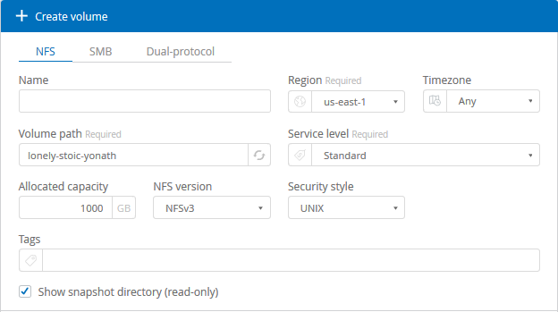
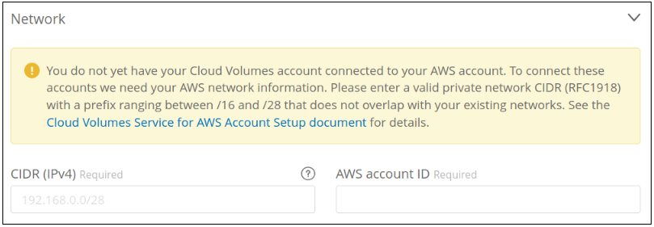
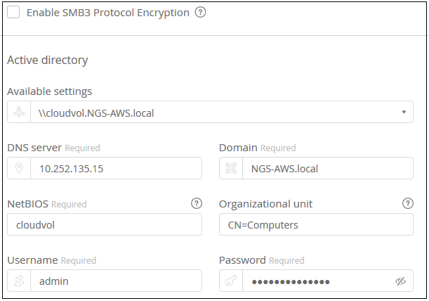

Solicitar cambios en el documento
Solicitar cambios en el documento Editar en GitHub
Editar en GitHub Guía del colaborador
Guía del colaboradorCreando un volumen de cloud
Colaboradores
Se crean Cloud Volumes desde el sitio de Cloud Orchestrator de NetApp.
Requisitos previos
El entorno de AWS debe cumplir con ciertos requisitos antes de poder crear el primer volumen de cloud. Para cada región de AWS en la que planea implementar volúmenes de cloud, debe tener:
-
Cloud privado virtual (VPC)
-
Puerta de enlace privada virtual (VGW) conectada a su VPC
-
Subred para VPC
-
Rutas definidas que incluyen la red en la que se ejecutarán los volúmenes de cloud
-
Opcionalmente, una puerta de enlace de conexión directa
Debe tener disponible la siguiente información cuando cree el primer volumen de cloud en una región:
-
ID de cuenta de AWS: Identificador de cuenta de Amazon de 12 dígitos sin guiones.
-
Bloque de enrutamiento interdominio sin clases (CIDR): Bloque IPv4 CIDR sin usar. El prefijo de red debe estar comprendido entre /16 y /28, y también debe estar dentro de los rangos reservados para redes privadas (RFC 1918). No seleccione una red que se superponga con las asignaciones CIDR de VPC.
-
Debe haber seleccionado la región correcta en la que desea utilizar el servicio. Consulte "Selección de la región".
Si no configuró los componentes de red de AWS necesarios, consulte "Configuración de cuenta de Cloud Volumes Service para AWS de NetApp" guía para obtener más detalles.
Nota: cuando planee crear un volumen SMB, debe tener un servidor de Windows Active Directory disponible para el que pueda conectarse. Deberá introducir esta información al crear el volumen. Además, asegúrese de que el usuario Admin puede crear una cuenta de equipo en la ruta de la unidad organizativa (OU) especificada.
Introduzca los detalles del volumen
Complete los campos de la parte superior de la página Create Volume para definir el nombre del volumen, el tamaño, el nivel de servicio y mucho más.
-
Después de haber iniciado sesión en el "Cloud Orchestrator de NetApp" sitio con la dirección de correo electrónico que ha proporcionado durante su suscripción, y usted lo ha hecho "seleccione la región", Haga clic en el botón Crear nuevo volumen.

-
En la página Create Volume (Crear volumen), seleccione NFS, SMB o Dual-protocol como el protocolo para el volumen que desea crear.
-
En el campo Nombre, especifique el nombre que desea utilizar para el volumen.
-
En el campo Región, seleccione la región AWS en la que desea crear el volumen. Esta región debe coincidir con la región configurada en AWS.
-
En el campo Zona horaria, seleccione su zona horaria.
-
En el campo Ruta de volumen, especifique la ruta de acceso que desea utilizar o aceptar la ruta generada automáticamente.
-
En el campo nivel de servicio, seleccione el nivel de rendimiento para el volumen: Estándar, Premium o extremo.
Consulte "Selección del nivel de servicio" para obtener más detalles.
-
En el campo capacidad asignada, seleccione la capacidad necesaria. Tenga en cuenta que el número de inodos disponibles depende de la capacidad asignada.
Consulte "Seleccione la capacidad asignada" para obtener más detalles.
-
En el campo versión NFS, seleccione NFSv3, NFSv4.1 o ambos según sus requisitos.
-
Si seleccionó Dual-protocol, puede seleccionar el estilo de seguridad en el campo estilo de seguridad seleccionando NTFS o UNIX en el menú desplegable.
Los estilos de seguridad afectan al tipo de permiso de archivo utilizado y cómo se pueden modificar los permisos.
-
UNIX utiliza bits del modo NFSv3 y solo los clientes NFS pueden modificar los permisos.
-
NTFS usa ACL de NTFS, y solo los clientes SMB pueden modificar los permisos.
-
-
En el campo Mostrar directorio de instantáneas, mantenga el valor predeterminado en el que puede ver el directorio de instantáneas de este volumen, o desactive la casilla para ocultar la lista de copias Snapshot.
Introducir detalles de red (ajuste único por región de AWS)
Si es la primera vez que crea un volumen de cloud en esta región de AWS, se muestra la sección Red para que pueda conectar su cuenta de Cloud Volumes a su cuenta de AWS:
-
En el campo CIDR (IPv4), introduzca el rango de IPv4 deseado para la región. El prefijo de red debe estar comprendido entre /16 y /28. La red también debe estar dentro de los rangos reservados para redes privadas (RFC 1918). No seleccione una red que se superponga con las asignaciones CIDR de VPC.
-
En el campo ID de cuenta de AWS, introduzca su identificador de cuenta de Amazon de 12 dígitos sin guiones.

Introducir reglas de política de exportación (opcional)
Si ha seleccionado NFS o Dual-Protocol, puede crear una directiva de exportación en la sección Política de exportación para identificar los clientes que pueden acceder al volumen:
-
En el campo clientes permitidos, especifique los clientes permitidos mediante una dirección IP o enrutamiento entre dominios sin clase (CIDR).
-
En el campo Access, seleccione Leer y escribir o sólo lectura.
-
En el campo Protocolos, seleccione el protocolo (o los protocolos si el volumen permite el acceso NFSv3 y NFSv4.1) utilizado para el acceso de los usuarios.

Haga clic en + Agregar regla de política de exportación si desea definir reglas de política de exportación adicionales.
Habilitar el cifrado de datos (opcional)
-
Si seleccionó SMB o protocolo dual, puede habilitar el cifrado de sesión SMB marcando la casilla del campo Activar cifrado de protocolo SMB3.
Nota: no active el cifrado si los clientes SMB 2.1 necesitan montar el volumen.
Integrar el volumen con un servidor de Active Directory (SMB y protocolo doble)
Si seleccionó SMB o protocolo dual, puede optar por integrar el volumen con un servidor de Windows Active Directory o un Microsoft AD gestionado por AWS en la sección Active Directory.
En el campo Configuración disponible, seleccione un servidor de Active Directory existente o agregue un nuevo servidor AD.
Para configurar una conexión a un nuevo servidor AD:
-
En el campo servidor DNS, introduzca las direcciones IP de los servidores DNS. Utilice comas para separar las direcciones IP al hacer referencia a varios servidores, por ejemplo, 172.31.25.223, 172.31.2.74.
-
En el campo dominio, introduzca el dominio del recurso compartido SMB.
Cuando se utilice Microsoft AD gestionado por AWS, utilice el valor del campo "Nombre DNS de directorio".
-
En el campo NetBIOS del servidor SMB, introduzca un nombre NetBIOS para el servidor SMB que se creará.
-
En el campo Unidad organizativa, introduzca "CN=equipos" para las conexiones con su propio servidor de Windows Active Directory.
Al utilizar Microsoft AD gestionado por AWS, la unidad organizativa debe introducirse con el formato "OU=<NetBIOS_name>". Por ejemplo, OU=AWSvedAD.
Para utilizar una unidad organizativa anidada, debe llamar primero a la unidad organizativa de nivel más bajo hasta la unidad organizativa de nivel más alto. POR EJEMPLO: OU=THIRDLEVEL,OU=SEGUNDO NIVEL,OU=PRIMER NIVEL.
-
En el campo Nombre de usuario, introduzca un nombre de usuario para el servidor de Active Directory.
Puede utilizar cualquier nombre de usuario autorizado para crear cuentas de equipo en el dominio de Active Directory al que se une el servidor SMB.
-
En el campo Contraseña, introduzca la contraseña del nombre de usuario de AD que especificó.

Consulte "Diseñar una topología de sitio para los Servicios de dominio de Active Directory" Para obtener directrices sobre cómo diseñar una implementación de Microsoft AD óptima.
Consulte "Configuración del servicio de directorio de AWS con Cloud Volumes Service de NetApp para AWS" Guía para obtener instrucciones detalladas sobre el uso de Microsoft AD gestionado por AWS.

Debe seguir las directrices sobre la configuración del grupo de seguridad de AWS para habilitar volúmenes de cloud para que se integren correctamente con los servidores de Windows Active Directory. Consulte "Configuración del grupo de seguridad de AWS para servidores Windows AD" si quiere más información. Nota: los usuarios UNIX que montan el volumen mediante NFS se autenticarán como usuario de Windows "root" para la raíz de UNIX y "pcuser" para el resto de usuarios. Asegúrese de que estas cuentas de usuario existan en su Active Directory antes de montar un volumen de protocolo doble cuando utilice NFS.
Crear una política de Snapshot (opcional)
Si desea crear una política de instantáneas para este volumen, introduzca los detalles en la sección Política de Snapshot:
-
Seleccione la frecuencia de instantánea: Hourly, Daily, Weekly o Monthly.
-
Seleccione la cantidad de snapshots que se conservarán.
-
Seleccione la hora a la que se debe realizar la copia de Snapshot.

Puede crear políticas de Snapshot adicionales repitiendo los pasos anteriores o seleccionando la pestaña Snapshots en el área de navegación izquierda.
Cree el volumen
-
Desplácese hacia abajo hasta la parte inferior de la página y haga clic en Crear volumen.
Si previamente creó un volumen de cloud en esta región, el nuevo volumen aparecerá en la página Volumes.
Si este es el primer volumen de cloud que creó en esta región de AWS y ingresó la información de redes en la sección Network de esta página, se muestra un cuadro de diálogo de progreso que identifica los siguientes pasos que debe seguir para conectar el volumen con interfaces de AWS.

-
Acepte las interfaces virtuales como se describe en la sección 6.4 de "Configuración de cuenta de Cloud Volumes Service para AWS de NetApp" guía. Debe realizar esta tarea en un plazo de 10 minutos o es posible que el sistema haya agotado el tiempo de espera.
Si las interfaces no aparecen en 10 minutos, puede que haya un problema de configuración; en ese caso, debe ponerse en contacto con el servicio de soporte de.
Una vez creadas las interfaces y otros componentes de red, el volumen que creó aparece en la página volúmenes y el campo Actions se muestra como disponible.

Continúe con "Montaje de un volumen de cloud".